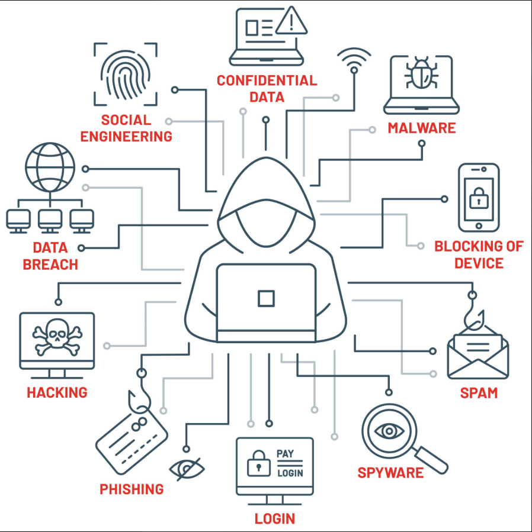

Common Threats
- Phishing emails
- Malware and viruses
- Hacking and unauthorized access
By Merlyn Garcia
I’m currently studying IT, and I’ve always been curious about hacking and jailbreaking. I’ve wanted to learn how people find ways around restrictions on devices and systems, how hacking actually works, and how to use that knowledge to understand cybersecurity and protect technology.

I believe cybersecurity professionals monitor system components and networks to make sure everything is working safely and to look for suspicious activity. They also help protect computers, networks, and sensitive information from hackers, viruses, and other security threats.
A Cybersecurity Analyst monitors an organization’s networks and systems, looks for suspicious activity, and responds when there is an attack or security problem.
A Penetration Tester, also called an ethical hacker, is hired to legally break into systems to find weak spots before real hackers do. This is the job that connects most to my interest in hacking and jailbreaking.
Want to learn more? Check out TryHackMe, a site where beginners can practice cybersecurity skills legally.